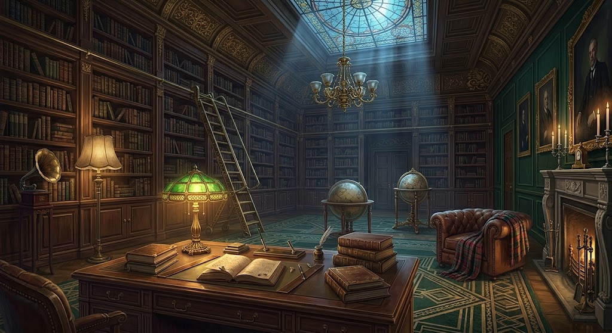

Delitto a Villa Nera
La notte del 14 novembre 1953, durante un temporale, il Conte Nero viene trovato morto nel cuore della sua villa. Sei ospiti. Sei armi. Nove stanze. Una sola verità, chiusa in una busta top-secret. Questo manuale è il tuo dossier: lore, moventi, mappe e tattiche da vero detective.
🔍 Apri il gioco 📖 Leggi i dossier
Stile: noir art-deco · Usa gli assets/ veri del gioco · Suggerimento: premi ❓ Regole nel gioco per gli asset

🕯️ La storia
la notte del delitto— dal rapporto dell'Ispettore
Il Conte Nero, collezionista d'arte e uomo di segreti, aveva riunito sei ospiti per annunciare il nuovo testamento. Ognuno aveva un motivo per odiarlo. Il temporale ha isolato la villa: ponte crollato, telefono muto, cancello bloccato. L'assassino è ancora tra gli ospiti — e la polizia arriverà all'alba. Tocca a te scoprire chi, con cosa e dove prima che le tracce svaniscano.
Il Conte brinda: «Domani cambierà tutto». Litiga con la Contessa Pavone per un quadro e con il Prof. Prugna per un manoscritto.
Il Reverendo Verdi propone una preghiera, il Colonnello Senape controlla porte e fucili. La Dott.ssa Bianca serve l'amaro.
Amelia Rosso canta al piano della Sala da Ballo. Il Conte si ritira nello Studio: «Tra un'ora saprete».
Un colpo sordo, un profumo di cera e ferro. Quando la luce torna, il Conte è morto e una finestra della Serra è aperta.
Sei tu il detective. La busta con le tre carte della verità è sigillata. Interroga, ipotizza, accusa.
🎭 I sei sospetti
clicca una carta per aprire il dossier🗡️ Le sei armi
oggetti reali della villa🏛️ Le nove stanze
mappa + passaggi segretiLa villa è un tabellone 24×24. Entri dalle porte oro tratteggiate. Due passaggi segreti attraversano la casa senza dadi: Cucina ⇄ Studio e Serra ⇄ Salotto — li usava il Conte per sparire durante le feste.
📜 Regole complete
come nel gioco🎲 1 · Turno: dadi e movimento
💡 2 · Ipotesi e smentite
⚖️ 3 · Accusa finale
🚇 4 · Passaggi segreti
📓 5 · Taccuino
🧠 Strategia del detective
pensata per battere le IAOgni turno in stanza deve produrre un'ipotesi: anche smentita, ogni carta vista è un'esclusione. Non finire mai il turno senza aver chiesto.
Non fissarti su un sospetto: cambia ogni volta due carte su tre. Così mappi tutte le mani in pochi turni e la busta emerge per esclusione.
Serra e Cucina sono basi perfette: con un passaggio raggiungi l'ala opposta e ipotizzi dove gli altri non arrivano.
Accusa con al massimo 1–2 incognite totali. Dopo il turno 28 le IA osano di più: meglio un'accusa ragionata che regalare la vittoria.